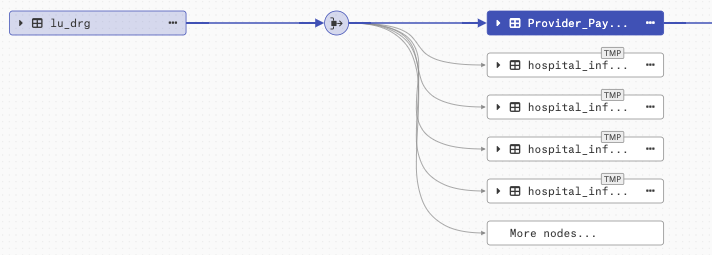
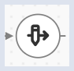
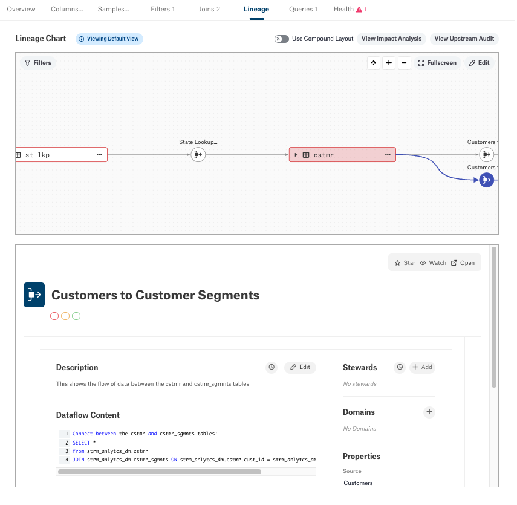
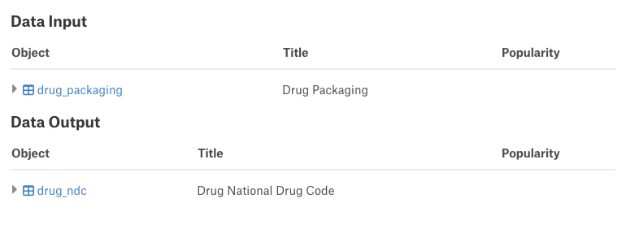
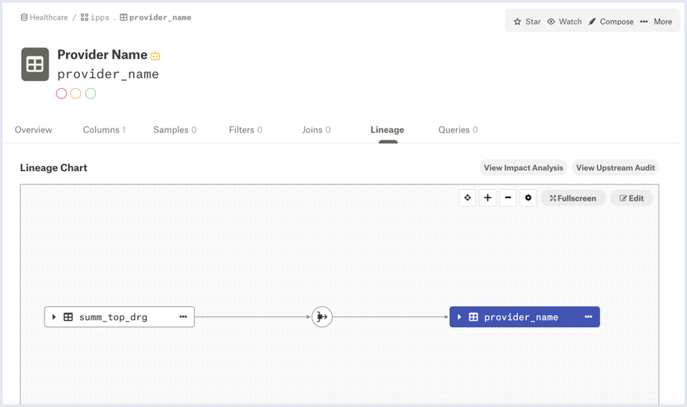
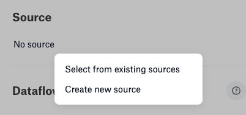
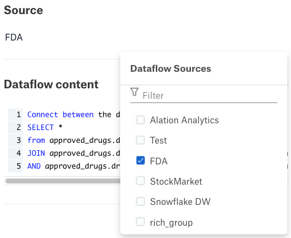
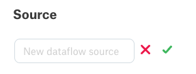

Dataflow Objects¶
Alation Cloud Service Applies to Alation Cloud Service instances of Alation
Customer Managed Applies to customer-managed instances of Alation
A dataflow object is a type of Alation object that represents the data flow between source and target objects and documents the process of creating the source-target connections. A dataflow object is generic and can be used to store information about ETL or ELT processes, stored procedures, SQL queries, or scripts used to create target data from source data.
Dataflow objects can be created in four ways:
Automatically by Alation when it calculates lineage data from the metadata ingested during metadata extraction (MDE), query log ingestion (QLI), and from ingesting Compose queries. For example, a dataflow object will be created when you run CREATE TABLE or CREATE VIEW queries in Compose to create new data objects.
From direct lineage pulled from certain databases that store lineage records in system tables. Direct lineage is supported only for certain databases using OCF connectors, such as SAP HANA.
By the Lineage APIs
On the Lineage diagram in Alation, dataflow objects are represented with their own graphic elements. Automatically generated or API-created dataflows use the following icon:
{kind=link}
The icon is shown in context in the following diagram:
{kind=link}
Manually added dataflow objects have the following icon:
{kind=link}
Each dataflow object has a dedicated catalog page in Alation.
Viewing Dataflow Objects in the Catalog¶
To open the page of a dataflow object,
On the Lineage tab, on the diagram itself, click the dataflow object you want to view.
Scroll down to the view area under the diagram. The dataflow object page will be displayed in the view area:

If your role has appropriate permissions, you can change the catalog fields for the dataflow object directly in this view pane or you can open this page in the Catalog by clicking Open on the upper right. You can add the Title and Description and edit other available custom fields.
Finding Dataflow Objects Using Search¶
To find dataflow objects that exist in your catalog:
In the Search box, start typing the title of a dataflow object. The search results will update to display all objects that match the text you typed. If the title of any existing dataflow object matches the text, it will be included in the result set:
{kind=link}
Click the object in the search result set to view its dedicated catalog page.
Dataflow Fields¶
Each dataflow object has a number of fields associated with it, including standard ones such as Description, Stewards, Domains, Tags, and Relevant Articles, but also the following ones specific to dataflow objects:
Properties
Dataflow Content
Data Input
Data Output
Properties¶
The Properties field includes the following:
Source—Shows the group source name of the dataflow object, if one has been created. Users with administrator roles can edit this field, and either select an existing group source or create a new one. This source name can then be used to filter the lineage shown. See Group Dataflow Objects for more information.
Creation Type—Has information on how the dataflow object was created:
AUTOMATICAPIMANUAL
External ID—Displays the
external_idproperty of the dataflow objects created using the API.
Dataflow Content¶
The Dataflow Content field contains detailed information on what kind of data transformation was performed at this point in the data flow. This field is not editable on the dataflow object’s catalog page, but can be edited in the lineage editor’s Details tab. When a dataflow object is created automatically, the Dataflow Content field will contain the query that created the target object. Dataflow objects created using the dbt connector contain the Jinja code used to generate the associated lineage. If the dataflow object is created using the API or manually, the Dataflow Content field value should also be provided.
Input and Output Fields¶
The Data Input and Data Output fields have the information on the source (Input) and Target (Output) data objects. If there are any external (EXT) or temp (TMP) objects connected to the dataflow object, the Data Input and Data Output sections do not show them but they can be viewed in the lineage diagram.
Under Data Input and Data Output, you can expand the objects that have child objects:
{kind=link}
Customizing the Dataflow Page Template¶
You can customize the catalog page template of the Dataflow object in a similar way to customizing the catalog template of any other object.
You need the role of a Catalog Admin or Server Admin to be able to change object templates.
The template of the Dataflow object can be found at Settings > Catalog Admin > Customize Catalog > Custom Templates > Data Object Templates > Dataflow.
For details on how to customize templates, see Custom Fields.
Deleting Dataflow Objects¶
You can delete a dataflow object using the lineage editor.
Log in to Alation as an admin user.
Open the catalog page of the data object for which you want to delete a dataflow object.
Click the Lineage tab to open it, then click the Edit button on the top right of the diagram.
Click the node representing the dataflow you want to delete to open the dataflow object editor.
Click the trash can icon to the right of the dataflow object’s name. You are shown a confirmation dialog that warns you that existing lineage will be disconnected and any external objects connected to the dataflow will be deleted.
Click Delete to delete the dataflow, or Cancel to cancel the operation.
For dataflow objects created manually, you can also delete individual dataflow paths. See Deleting a Path.
Group Dataflow Objects¶
From Alation release 2022.3, dataflow objects can be grouped according to source, which allows you to filter your lineage diagram by group. All automatically created dataflow objects have a group assigned based on the data source they are derived from. For example, if you run MDE and QLI on an Oracle data source, any dataflow objects created will have source Oracle.
If the data source is renamed or deleted, the corresponding group is likewise renamed or deleted.
When creating a dataflow object with the Lineage API, you can pass a source group name along with the payload to associate it to the dataflow object. If the passed group name already exists, the new dataflow object is associated with it. If not, the passed name is used to create a new source group and the dataflow object is associated with the new group.
When creating a dataflow object manually, you can also manually associate it with a new or existing source group.
You can modify or create a source group using either the Details tab of the lineage editor or the dataflow object’s catalog page. In either case, you click the pencil icon beside the contents of the Source field, where you have the choice to select from existing sources or create a new source:
To select from existing sources, choose from one of the already-defined sources:
To create a new source, type a source name in the provided field, then select the green check mark to the right of the field (the source name can be anything you like; it does not have to match an existing data source):
If you are making your changes in the lineage editor, click Done and then Publish Lineage to publish your changes.